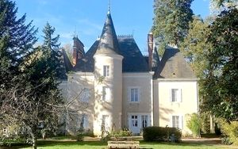
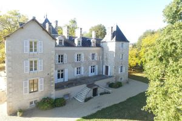
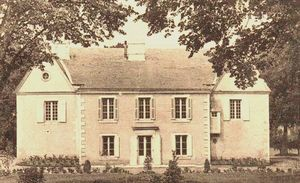
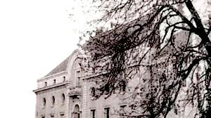
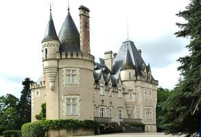
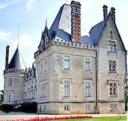

Recensement Jean-Claude Truffet
| Département | 86 — Vienne |
| Canton | Montmorillon |
| Commune | Montmorillon |
| Type d'édifice | Château |
| Période d'origine | XV-XVI |






Trois châteaux à Montmorillon dont celui de Montmorillon, de la Lande, et de Grandmont. MONTMORILLON, la ville apparaît vers 1080, et il est nécessaire pour le duc d'Aquitaine de contrôler la zone frontière entre Poitou, Marche et Limousin. Un château est bâti sur la falaise qui domine la Gartempe. LA LANDE, appelé en premier le château des Goudon de Buf, il fut donné en dot aux Goudon de l'Héraudière, vers 1550, qui le gardèrent depuis et prirent le nom de Goudon de Lalande de l'Héraudière. Lieu de mémoire de la Résistance, lieu du Comité de Libération unifié de la Vienne le 4 août 1944, il propose de nombreux documents allant du XVe siècle à 1945. Sa place dans l'histoire, il l'a acquise lors de la Seconde Guerre mondiale, devenant le QG de maquis du Montmorillonnais. Le châtelain Guy Goudon de La Lande, Son père, officier d'artillerie capturé en 1940, étant toujours prisonnier en Allemagne. La propriété est dans la famille depuis 1670. GRANDMONT, le 5 juin 1209, Itier, seigneur de Magnac, donne au prieur de Grandmont tous ses droits sur un terrain sis au bord de la Gartempe ayant appartenu à sa grand-mère, Anaïs, épouse de Bertrand de Montmorillon. Les bâtiments restants furent vendus à la fin du XVIIe siècle à M. Douadic, Conseiller du Roi près la Sénéchaussée. Puis, le bien fut vendu à M. Bastide de Rancon qui le vendra en 1733 à M. Viguier des Cosses.
MONTMORILLON, se compose d'une motte encore parfaitement identifiable. La tour-porte située au sud de la chapelle Saint-Laurent est le seul vestige de ces fortifications; elle est défendue par une bretèche. Sa physionomie, notamment la voûte du rez-de-chaussée, autorise une datation du XIVe siècle; la tourelle d'escalier a été rajoutée au XVe siècle. En février 1523, renforcement de quatorze tours et sept portes. Une tour fut construite vers 1880 par M. l'abbé Chabant sur l'emplacement de l'ancien château féodal de Montmorillon. Rénovation en 1960. GRANDMONT, le corps de logis rectangulaire encadré de deux ailes en saillie de Mme Vassor, contiguës au bâtiment subsistant. La porte est couronnée d'un fronton cintré brisé enserrant deux blasons, la façade donne sur une 1ère cour à laquelle on accède par une porte charretière encadrée de deux portes piétonnes, dont une murée. Deux longs corps de bâtiment viennent s'appuyer contre l'aile ouest. La LANDE; maison forte dont la construction date du XVIe au XIXe siècle. Elle fut transformée en château néogothique au XIXe siècle. Au XVIe siècle, se composait d'une maison rectangulaire, appuyé pour une de ses façades contre une grosse tour carrée et sur l'autre, à une tour ronde abritant un escalier à vis. Les travaux de réfection de 1875 respectèrent les deux tours et le pigeonnier à mâchicoulis. Le château n'est pas protégé aux M.H.
Lande ;Famille de Goudon de l'Héraudière Grandmont; Famille de Bertrand de Montmorillon
"
à Montmorillon 46° 23' 51" Nord et 0° 54' 08" Est Montmorillon grav 1-2-3, de la Lande grav 5-6, et de Grandmont grav 4.